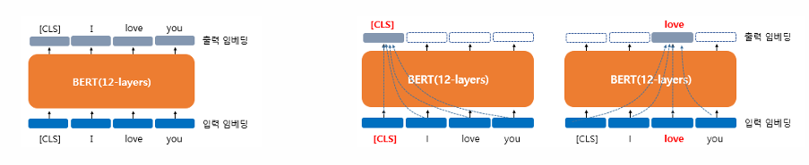

BERT(Bidirectional Encoder Representations from Transformers)는 2018년에 구글이 공개한 사전 훈련된 모델, 트랜스포머를 이용하여 구현, 위키피디아(25억 단어)와 BooksCorpus(8억 단어)와 같은 레이블이 없는 텍스트 데이터로 사전 훈련된 언어 모델
파인튜닝(fine-tuning) 레이블이 없는 방대한 데이터로 사전 훈련된 모델을 가지고, 레이블이 있는 다른작업(Task)에서 추가 훈련과 함께 하이퍼파라미터를 재조정
하고 싶은 태스크가 스팸메일 분류라고 하였을 때, 이미 위키피디아 등으로사전학습된 BERT 위에 분류를 위한 신경망을 한층 추가
BERT의 크기
BERT의 기본 구조: 트랜스포머의 인코더를 쌓아 올린 구조 (Base 버전: 총12개, Large 버전: 총 24개)
BERT는 ELMo나 GPT-1과 마찬가지로 문맥을 반영한 임베딩(Contextual Embedding)을 사용

BERT의 입력은 단순히 임베딩층(embedding layer)를 지난 임베딩 벡터였지만, BERT를 지나고 나서는 [CLS], I, love, you라는 모든 단어 벡터들을 참고한 후에 문맥 정보를 가진 벡터가 됨
12개의 층을 지난 후에 최종적으로 출력 임베딩을 얻게 됨
BERT의 첫번째 층의 출력 임베딩은 BERT의 두번째 층에서는 입력 임베딩이 됨
내부적으로 각 층마다 멀티헤드 셀프어텐션과 포지션-와이즈-피드포워드 신경망을 수행
서브워드 토크나이저: WordPiece
BERT는 단어보다 더 작은 단위로 쪼개는 서브워드 토크나이저를 사용
BERT가 사용한 토크나이저는 WordPiece
바이트 페어 인코딩(Byte Pair Encoding, BPE)의 유사
글자로부터 서브워드들을 병합해가는 방식으로 최종 단어집합(Vocabulary)을 만듦
서브워드 토크나이저는 자주 등장하지 않는 단어의 경우에는 더 작은 단위인 서브워드로 분리되어 서브워드들이 단어 집합에 추가. 이 단어 집합을 기반으로 토큰화를 수행.
from transformers import BertTokenizertokenzier = BertTokenizer.from_pretrained("bert-base-uncased")
c:\.venv\lib\site-packages\tqdm\auto.py:21: TqdmWarning: IProgress not found. Please update jupyter and ipywidgets. See https://ipywidgets.readthedocs.io/en/stable/user_install.html
from .autonotebook import tqdm as notebook_tqdm
c:\.venv\lib\site-packages\huggingface_hub\file_download.py:142: UserWarning: `huggingface_hub` cache-system uses symlinks by default to efficiently store duplicated files but your machine does not support them in C:\Users\master\.cache\huggingface\hub\models--bert-base-uncased. Caching files will still work but in a degraded version that might require more space on your disk. This warning can be disabled by setting the `HF_HUB_DISABLE_SYMLINKS_WARNING` environment variable. For more details, see https://huggingface.co/docs/huggingface_hub/how-to-cache#limitations.
To support symlinks on Windows, you either need to activate Developer Mode or to run Python as an administrator. In order to activate developer mode, see this article: https://docs.microsoft.com/en-us/windows/apps/get-started/enable-your-device-for-development
warnings.warn(message)
result = tokenzier.tokenize("Hello, I'm trying to see some examples! undisputed, K-pop swag")print(result)
가령, 문장의 길이가 4라면 4개의 포지션 임베딩 벡터를 학습시키고, BERT의 입력마다 다음과 같이 포지션 임베딩 벡터를 더해줌
실제 BERT에서는 문장의 최대길이를 512로 하고 있으므로, 총 512개의 포지션 임베딩 벡터가 학습됨
사전 훈련(Pre-training)
ELMo는 정방향 LSTM과 역방향 LSTM을 각각 훈련시키는 방식의 양방향 언어모델
GPT-1은 트랜스포머의 디코더를 이전 단어들로부터 다음 단어를 예측하는 방식의 단방향 언어모델을 BERT는 GPT와 달리 화살표가 양방향으로 뻗어나감.
이는 마스크드 언어모델(Masked Language Model)을 통해 양방향성을 얻었기 때문.
BERT의 사전 훈련 방법은 크게 두가지
첫번째는 마스크드 언어모델(Masked Language Model, MLM)
두번째는 다음 문장 예측(Next sentence prediction, NSP)
Masked Language Model (MLM)
BERT는 사전 훈련을 위해서 인공 신경망의 입력으로 들어가는 입력 텍스트의 15%의 단어를 랜덤으로 마스킹(Masking)하고 이 단어들을 예측하도록 함.
단, 전부 [MASK]로 변경하지는 않고, 그 중 80%는 [MASK]로, 10%는 랜덤의 다른 단어로, 10%는 동일하게 놔둠
‘dog’ 토큰은 [MASK]로 변경
’he’는 랜덤 단어 ’king’으로 변경
’play’는 변경되지 않았지만 예측에 사용
다음 문장 예측 (NSP)
BERT는 두 개의 문장을 준 후에 이 문장이 이어지는 문장인지 아닌지를 맞추는 방식으로 훈련
반은 실제 이어지는 두개의 문장, 반은 랜덤으로 이어붙인 두개의 문장으로 훈련
이어지는 문장의 경우
Sentence A : The man went to the store.
Sentence B : He bought a gallon of milk.
Label = IsNextSentence
이어지는 문장이 아닌 경우
Sentence A : The man went to the store.
Sentence B : dogs are so cute.
Label = NotNextSentence
BERT의 입력으로 넣을 때에는 [SEP]라는 특별 토큰을 사용해서 문장을 구분함.
첫 번째 문장의 끝에 [SEP] 토큰을 넣고, 두 번째 문장이 끝나면 역시 [SEP] 토큰을 붙여줌.
그리고 이 두 문장이 실제 이어지는 문장인지 아닌지를 [CLS] 토큰(BERT가 분류 문제를 풀기 위해 추가된 특별 토큰)의 위치의 출력층에서 이진 분류 문제를 풀도록 함.
MLM과 NSP는 따로 학습하는 것이 아니라 loss를 합하여 학습이 동시에 이루어짐.
세그먼트 임베딩 (Segment Embedding)
BERT는 QA(Question Answering) 같은 두 개의 문장 입력이 필요한 태스크를 풀기도 함.
이때, 문장 구분을 위해서 BERT는 세그먼트 임베딩이라는 또 다른 임베딩층(Embedding layer)을 사용함.
첫 번째 문장에는 Sentence 0 임베딩, 두 번째 문장에는 Sentence 1 임베딩을 더해주는 방식임.
단, 여기서 두 개의 ’문장’이라는 표현에서 실제로 문장은 두 종류의 텍스트, 두 개의 문서일 수도 있음.
두 개의 문장을 입력받을 필요가 없는 경우도 있음.
예를 들어, 감성 분류 태스크에서는 한 개의 문서에 대해서만 분류를 하는 것이므로, 이 경우에는 BERT의 전체 입력에 Sentence 0 임베딩만 더함.
WordPiece Embedding : 실질적인 입력이 되는 워드 임베딩임. 임베딩 벡터의 종류는 단어 집합의 크기로 30,522개임.
Position Embedding : 위치 정보를 학습하기 위한 임베딩임. 임베딩 벡터의 종류는 문장의 최대 길이인 512개임.
Segment Embedding : 두 개의 문장을 구분하기 위한 임베딩임. 임베딩 벡터의 종류는 문장의 최대 개수인 2개임.
파인튜닝(Fine-tuning)
Single Text Classification
하나의 문서에 대한 텍스트 분류
이 유형은 영화 리뷰 감성 분류, 로이터 뉴스 분류 등과 같이 입력된 문서에 대해서 분류를 하는 유형임.
문서의 시작에 [CLS]라는 토큰을 입력함.
텍스트 분류 문제를 풀기 위해서 [CLS] 토큰의 위치의 출력층에서 밀집층(Dense layer) 또는 완전 연결층(fully-connected layer) 이라고 불리는 층들을 추가하여 분류에 대한 예측을 수행함.
Tagging
문장의 각 단어에 품사를 태깅하는 품사 태깅 작업과, 개체를 태깅하는 개체명 인식 작업이 있음.
출력층에서는 입력 텍스트의 각 토큰의 위치에 밀집층(Dense layer) 을 사용하여 분류에 대한 예측을 수행함.
Text Pair Classification or Regression
텍스트의 쌍을 입력으로 받는 태스크(예: 자연어 추론(natural language inferenece))
자연어 추론 문제란, 두 문장이 주어졌을 때, 하나의 문장이 다른 문장과 논리적으로 어떤 관계에 있는지를 분류하는 것임.
유형으로는 모순 관계(contradiction), 함의 관계(entailment), 중립 관계(neutral)가 있음.
이때 입력 텍스트가 1개가 아니므로, 텍스트 사이에 [SEP] 토큰을 집어넣고, 세그먼트 임베딩을 사용하여 문서를 구분함.
Question Answering
질문과 본문이라는 두 개의 텍스트의 쌍을 입력
질문과 본문을 입력받으면, 본문의 일부분을 추출해서 질문에 답변하는 방식임.
예시:
질문: “강우가 떨어지도록 영향을 주는 것은?”
본문: “기상학에서 강우는 대기 수증기가 응결되어 중력의 영향을 받고 떨어지는 것을 의미합니다…”
정답: “중력”
어텐션 마스크(Attention Mask)
BERT를 실제로 실습하게 되면 어텐션 마스크(Attention Mask) 라는 시퀀스 입력이 추가로 필요함.
어텐션 마스크는 BERT가 어텐션 연산을 할 때, 불필요하게 패딩 토큰에 대해 어텐션을 하지 않도록 실제 단어와 패딩 토큰을 구분할 수 있도록 알려주는 입력값임.
이 값은 0과 1 두 가지 값을 가짐.
숫자 1 → 해당 토큰은 실제 단어이므로 마스킹을 하지 않는다는 의미.
숫자 0 → 해당 토큰은 패딩 토큰이므로 마스킹을 한다는 의미.
따라서 실제 단어의 위치에는 1, 패딩 토큰의 위치에는 0의 값을 가지는 시퀀스를 만들어 BERT의 또 다른 입력으로 사용함.
기타 참고사항
훈련 데이터: 위키피디아(25억 단어) + BooksCorpus(8억 단어) ≈ 총 33억 단어
토큰화: WordPiece 토크나이저를 사용하여 토큰화를 수행한 후 15% 비율에 대해 마스크드 언어 모델(MLM) 학습 진행
최대 입력 길이: 두 문장 Sentence A와 B의 합한 길이는 최대 512 토큰으로 제한
훈련 스텝: 100만 step 훈련 ≈ 총 33억 단어 코퍼스에 대해 40 에포크 학습
훈련 설정
옵티마이저: Adam
학습률 (Learning Rate): 10⁻⁴
가중치 감소 (Weight Decay): L2 정규화 0.01 적용
드롭아웃 (Dropout): 모든 레이어에서 0.1 적용
활성화 함수: ReLU가 아닌 GELU 함수 사용
배치 크기 (Batch Size): 256
SBERT(Sentence BERT)
문장 벡터를 얻는 방법
[CLS] 토큰 자체를 입력 문장의 벡터로 간주
[CLS] 토큰은 BERT에서 문장 전체의 정보를 요약하는 역할을 하므로, 이를 문장 벡터로 사용함.
BERT의 각 단어에 대한 출력 벡터들에 대해서 평균을 냄 (평균 풀링, Mean Pooling)
문장 내 모든 단어 벡터의 평균을 계산하여 문장 벡터를 생성함.
각 단어의 출력 벡터들에 대해서 평균 풀링 대신 맥스 풀링 (Max Pooling)
각 차원에서 가장 큰 값을 선택하여 문장 벡터를 생성함.
풀링 방식별 특징
평균 풀링 (Mean Pooling): 문장 내 모든 단어의 의미를 반영한 벡터를 생성함.
맥스 풀링 (Max Pooling): 중요한 단어의 의미를 강조하는 벡터를 생성함.
SBERT (Sentence-BERT) 는 기본적으로 BERT의 문장 임베딩 성능을 개선한 모델임.
기존 BERT는 문장 간 유사도를 비교하기 어려웠으나, SBERT는 이를 해결하기 위해 문장 임베딩을 더욱 효과적으로 만들도록 설계됨.
BERT의 문장 임베딩을 응용하여 BERT를 파인튜닝하여 더 나은 문장 표현 벡터를 학습할 수 있도록 함.
SBERT는 Siamese 네트워크 구조를 사용하여 문장 쌍(Sentence Pair) 데이터를 학습하며, 코사인 유사도(Cosine Similarity) 기반으로 문장 간 유사도를 빠르고 효율적으로 계산할 수 있음.
문장 쌍 분류 태스크로 파인튜닝
대표적으로는 NLI(Natural Language Inferencing) 문제
문장 A, B BERT 입력 → 평균 풀링 or 맥스 풀링 → 문장 임베딩 벡터 \((u, v)\) → 벡터 간 차이 \((|u - v|)\) → 벡터 연결 \(( h = (u; v; |u - v|) )\) → 출력층으로 전달하여 다중 클래스 분류 수행 → 소프트맥스 함수 통과 \(o-softmax(W_yh)\) → 레이블과의 오차 줄이며 학습 진행
문장 쌍 회귀 태스크로 파인튜닝
대표적으로 STS(Semantic Textual Similarity) 문제 (두 개의 문장으로부터 의미적 유사성을 구하는 문제)
문장 A, B BERT 입력 → 평균 풀링 or 맥스 풀링 → 문장 임베딩 벡터 \(( u, v )\) → 두 벡터의 코사인 유사도 → 해당 유사도와 레이블 유사도 간의 평균 제곱 오차 (Mean Squared Error, MSE) 최소화
참고자료
딥 러닝을 이용한 자연어 처리 입문(https://wikidocs.net/book/2155)